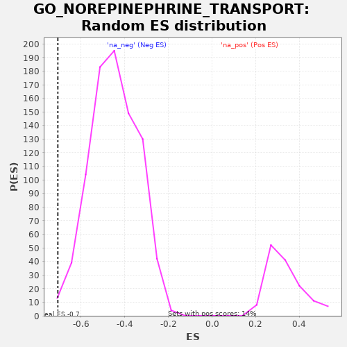

| | | Dataset | PRAD |
| Phenotype | NoPhenotypeAvailable |
| Upregulated in class | na_neg |
| GeneSet | GO_NOREPINEPHRINE_TRANSPORT |
| Enrichment Score (ES) | -0.70712537 |
| Normalized Enrichment Score (NES) | -1.5767509 |
| Nominal p-value | 0.0046565775 |
| FDR q-value | 0.047108635 |
| FWER p-Value | 0.992 |
Table: GSEA Results Summary
 Fig 1: Enrichment plot: GO_NOREPINEPHRINE_TRANSPORT
Fig 1: Enrichment plot: GO_NOREPINEPHRINE_TRANSPORT
Profile of the Running ES Score & Positions of GeneSet Members on the Rank Ordered List
| PROBE | GENE SYMBOL | GENE_TITLE | RANK IN GENE LIST | RANK METRIC SCORE | RUNNING ES | CORE ENRICHMENT | | 1 | P2RY1 | | | 7232 | 1.724 | -0.2542 | No |
| 2 | HRH3 | | | 11370 | -0.936 | -0.3998 | No |
| 3 | SNCA | | | 11452 | -1.011 | -0.4006 | No |
| 4 | ADRA2A | | | 11726 | -1.284 | -0.4077 | No |
| 5 | AGT | | | 13054 | -3.000 | -0.4489 | No |
| 6 | OXTR | | | 13354 | -3.463 | -0.4524 | No |
| 7 | SLC22A1 | | | 15611 | -7.971 | -0.5166 | No |
| 8 | FFAR3 | | | 16303 | -9.558 | -0.5217 | No |
| 9 | P2RY12 | | | 16323 | -9.602 | -0.5028 | No |
| 10 | ACTB | | | 19493 | -19.011 | -0.5769 | No |
| 11 | SLC6A2 | | | 20691 | -23.199 | -0.5722 | No |
| 12 | KCNB1 | | | 24477 | -42.323 | -0.6207 | Yes |
| 13 | ADORA2A | | | 24603 | -43.187 | -0.5371 | Yes |
| 14 | ADRA2C | | | 25251 | -47.983 | -0.4622 | Yes |
| 15 | OXT | | | 25380 | -48.955 | -0.3668 | Yes |
| 16 | STX1A | | | 26609 | -61.237 | -0.2856 | Yes |
| 17 | NISCH | | | 27330 | -71.478 | -0.1654 | Yes |
| 18 | ADRA2B | | | 27942 | -94.048 | 0.0048 | Yes |
Table: GSEA details [plain text format]

Fig 2: GO_NOREPINEPHRINE_TRANSPORT: Random ES distribution
Gene set null distribution of ES for GO_NOREPINEPHRINE_TRANSPORT